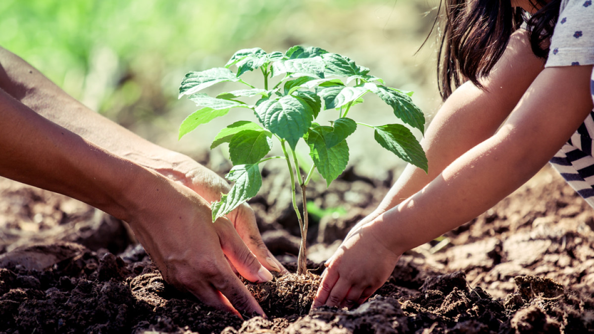
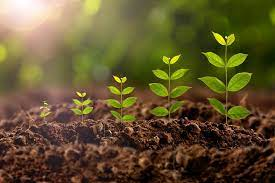
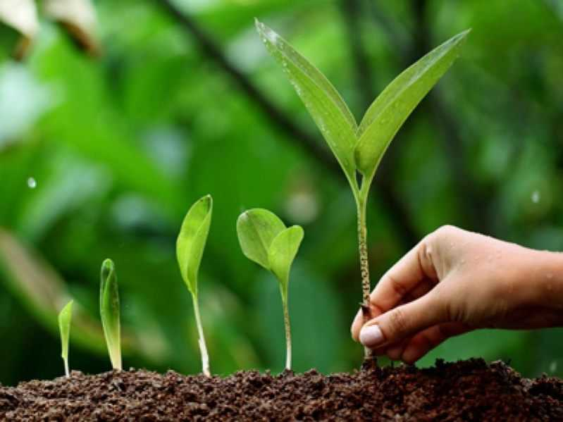
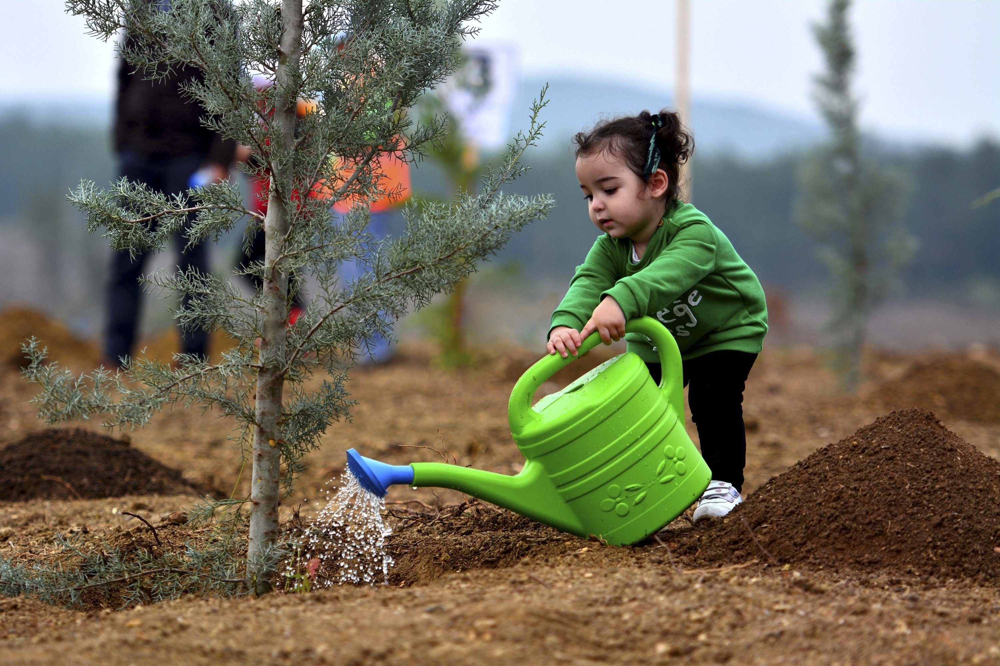
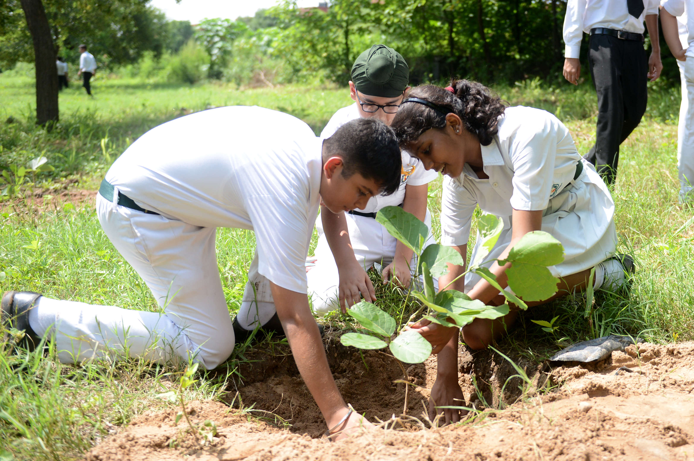

Tree planting is the process in which tree seedlings are transplanted generally for forestry, land reclamation, or landscaping purposes. Tree plantation is very necessary because trees provide oxygen to the environment and make the air quality better. If more trees are planted, then the world's environment will become a safer place to live in. Tree plantation also reduces pollution, thus making the life of future generations secure. Through this tree plantation essay, one will have a clear overview of this topic.
The tree is the key to a pollution-free environment for a long time because they are responsible for providing oxygen, improving the quality of air, climate amelioration, conserving water, soil preservation, and supporting wildlife. Due to all these reasons, tree plantation has become necessary in the present scenario as pollution is at a peak. Tree plantation is the only way to control pollution to some extent.

Afforestation in Tree Plantation
In silviculture, the tree plantation activity is known as afforestation or reforestation. This process involves planting seedlings in an area where the forest has been damaged by a fire, disease, or harvested or got destroyed by some human activity. As we know that pollution is increasing at an alarming rate, different countries are making various strategies to fight with this situation, and tree plantation is one of the most important strategies that is being adopted. Many reforestation companies have also been formed, which are responsible for planting trees in the deforested lands. Trees remove carbon dioxide and release oxygen to the air, thus making the air quality better for living beings. The knowledge gained through this paragraph shows the importance of tree plantation essays.
Benefits of Tree Plantation
Plants have a complete cycle of taking in Carbon DiOxide (CO2) and giving out Oxygen. Co2. Thus planting more trees would help in reducing the amount of CO2 that is present in the atmosphere.
The more the number of trees are planted, the cleaner the air will get. Having enough oxygen and reduced CO2 would make the air clean and free from pollutants.
Plants also have the ability to naturally filter dirty water. Thus planting more trees would not only result in cleaner air, but it would also make the water clean too.
Temperature has been constantly fluctuating due to a decrease in the number of plants. Plants can maintain atmospheric temperatures. In hot regions, having more plants would help regulate the heat.
Trees and plants are home to many wild creatures. A lot of birds build their nests on trees. Plants support wildlife. Planting more trees would not only help humans but it will support the whole biodiversity.
Planting trees makes the environment immediately more beautiful. Trees help prevent soil erosion. They also absorb different pollutants and thus make the air-water and earth cleaner.
Deforestation
Deforestation can be described as voluntary cutting down forests. Trees are usually cut in large numbers to provide more space for humans. This is a direct result of the population explosion. People are looking for more land to build their homes or to make space for growing more crops. Forests are also being cut down to provide more wood that is used as a building material as well as fuel.
Up until a century ago, a lot of lands were covered by forests. Around 2000 years ago, almost 80% of the planet was covered in forests. However today only 20%-30% of those forests exist. The rate of destruction of forests is more than the rate of its replenishment. This means that if we continue to destroy our environment at this rate, soon no tree will be left on earth. Therefore humans need to control the destructive nature and plant more trees.

Disadvantages of Deforestation
Cutting down forests does not only destroy the beauty of nature but is also very harmful to every living creature.
Humans and animals produce carbon dioxide (CO2) and inhale Oxygen. This oxygen is not present naturally on the Earth. Rather it is created by the plants through a process that is known as photosynthesis. Cutting down a large number of trees will reduce the amount of oxygen that is present on the planet.
Forests are home to different types of living organisms. They support a lot of animals, insects, reptiles, and plants. Cutting down forests means the complete destruction of biodiversity. Many species of animals have already become extinct due to deforestation. The constant activity of deforestation will soon lead to an episode of mass extinction.
Trees not only support flora and fauna but are also responsible for maintaining the fertility of the soil. The roots of the plants hold the most fertile top layer of soil in place. When trees are cut, their roots are destroyed too. This leads to the problem of soil erosion.
Cutting down forests is like bringing a permanent change that is almost irreversible in nature. A lot of trees take 20- 30 years to grow back. During this time the birds and animals that have been surviving due to the trees, become extinct.
About Us
We are a group of dedicated individuals working towards reforestation and environmental conservation. Our mission is to plant trees in urban and rural areas to promote a healthier ecosystem.
Gallery



CONCLUSION
With this tree plantation essay, it is clear that tree plantation is the key to save the earth from pollution. This is why many countries have now started to concentrate on increasing the rate of tree plantation to make the earth a safer place to live for the future generation. One may have learned all this in tree plantation in school essays. Every country should aim to increase afforestation rather than deforestation. Tree planting is cost-effective, thus making it simpler to achieve the goal of making the earth a safer place by making it free from pollution. The effects of climate change can also be controlled by increasing the rate of tree plantation.
Contact Us
If you have any questions or want to get involved, please reach out to us: